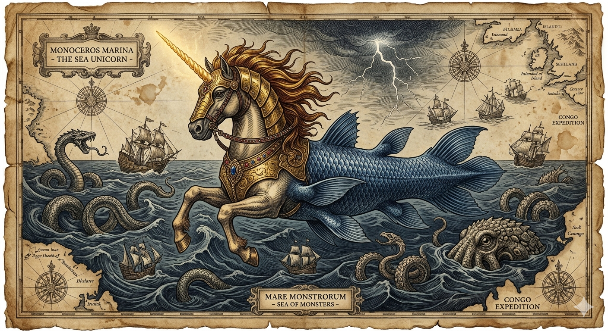
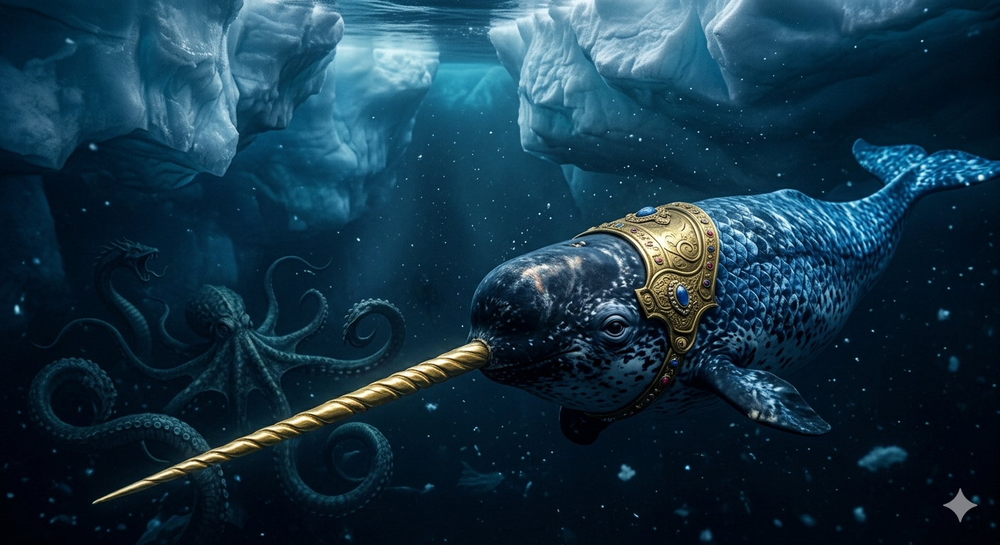

הנרוול
מחד-הקרן הימי המיתולוגי אל לווייתן הקרח הארקטי
מחקר אטימולוגי: מקור השמות
השם המדעי הטקסונומי: Monodon monoceros
השם המדעי הוא שילוב של מונחים מיוונית עתיקה המדגישים את ייחודיות השן הבולטת:
- Monodon: הלחם של המילים היווניות Mono (יחיד/אחד) ו-Odon (שן). פירוש: "בעל שן אחת".
- monoceros: הלחם של Mono (אחד) ו-Ceras (קרן). זהו המונח היווני המדויק ל"חד-קרן".
השם הנפוץ: Narwhal (נרוול)
- Ná (נורדית): פירושה "גוויה" (Corpse).
- hvalr (נורדית): פירושה "לווייתן".
משמעות: "לווייתן הגוויה" - בשל צבעו האפרפר המזכיר גוף של אדם שטבע.
ההונאה הויקינגית הגדולה
במשך מאות שנים, סוחרים נורדים מכרו את ניבי הנרוול כ"קרני חדי-קרן" לבתי המלוכה של אירופה. המלכה אליזבת הראשונה (1533–1603) החזיקה בקרן כזו בשווי של טירה שלמה.
המיתוס נופץ רק בשנת 1638 על ידי החוקר הדני אולה וורם (Ole Worm, 1588–1654), שהציג גולגולת נרוול מלאה והוכיח שהקרן האגדית היא למעשה שן של לווייתן.
המציאות הזואולוגית: חוש שישי ספירלי
האגדה: סוס פלאי בעל זנב דג וקרן קסומה שמטהרת רעלים.
המציאות: הניב השמאלי של הזכר צומח דרך השפה לאורך של עד 3 מטרים. זהו איבר חישה רגיש להפליא המכיל 10 מיליון קצות עצבים.
מאפיינים ביולוגיים של הניב
- רדאר ביולוגי: השן חשה בשינויי מליחות, טמפרטורה ולחץ במים.
- גמישות: הניב יכול להתכופף עד 30 ס"מ לכל כיוון מבלי להישבר.
- דו-צורתיות: רק זכרים מפתחים את הניב הארוך (לעיתים נדירות גם נקבות).
תיעוד חזותי (לחץ להגדלה)

המיתוס: "חד-הקרן של הים"

המציאות: לווייתן הנרוול